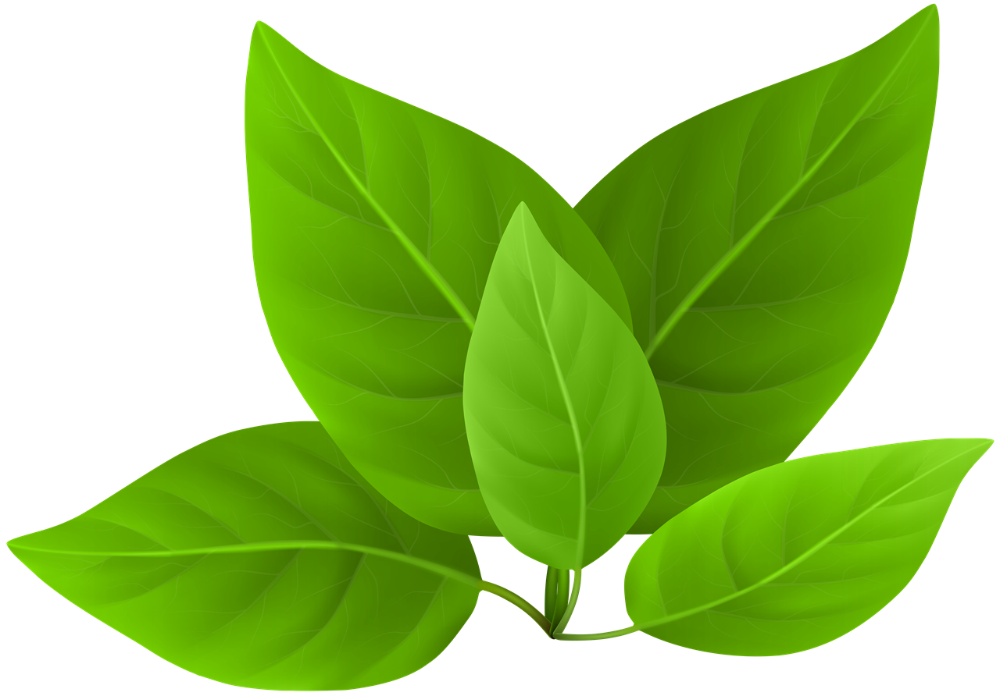
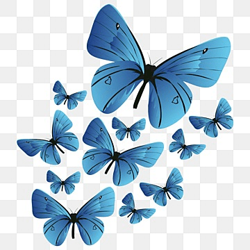

Aspiration
Ideate, Research, Design, Plan, Execute, Evaluate, Advocate, and Market to scale up our Environmental Sustainability initiatives especially in the field of Nature, Forest and Wildlife benefiting society at large..

At Vanalok Ventures Pvt Ltd (Vanalok), we carry on the business in environmental sustainability through projects and programs. It specializes in material development, design and nature interpretive exhibits and discovery centre, conduct nature camps and courses, create and run nature and cultural trails, organize awareness campaigns, design and execute green infrastructure with landscape, farmers engagement in forestry produce and organic farming, promoting sustainable eco-tourism and activities such as research, audit, assessment and documentation.

Ideate, Research, Design, Plan, Execute, Evaluate, Advocate, and Market to scale up our Environmental Sustainability initiatives especially in the field of Nature, Forest and Wildlife benefiting society at large..
Research, Training, Studies, Audits, Awareness Campaigns
Nature & cultural discovery centres, fabrication & artwork
Green architecture, construction & landscaping
Ecotourism, agri-tourism & eco-products
